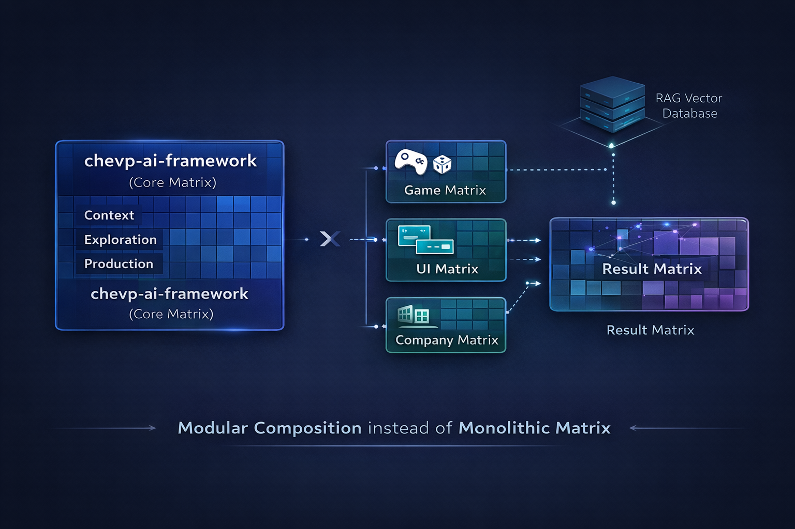

chevp-ai-framework
A structured, modular process framework that turns AI from a speed tool into a reliable, accountable development partner.

Patrice Chevillat
Software developer and creator of the chevp-ai-framework. Patrice designed the entire lifecycle concept, and documented the framework from the ground up.
The Problem
AI generates code faster than ever. But speed without structure creates new risks.
What goes wrong
- Hallucinated APIs and invented functions
- Inconsistent architectures across sessions
- Code nobody understands or can maintain
- Scope creep: "I also improved X while I was at it"
- No human oversight or validation gates
The root cause
- No enforced process between prompt and commit
- AI works without sufficient context
- Output is accepted without review
- Responsibility is unclear
- No separation of planning and building
"Vibe Coding is not progress — it's technical recklessness."
The Solution: 3 Sequential Steps
Every task follows this lifecycle. No step may be skipped.
Context
Understand the problem, gather context, confirm scope with the human.
Exploration
Create plan/spec, prototype where applicable, obtain human approval.
Production
Build step-by-step, validate against spec and prototype, ship.
Quality Gates between each step ensure the human explicitly approves before progressing.
6 Cross-Cutting Roles
Each role operates within every step, ensuring complete coverage.
SDLC
Process governance, quality gates, step transitions, iteration rules.
AI-Plans
Plan/spec artifacts, acceptance criteria, scope management, execution tracking.
UX-Tooling
Prototypes, preview feedback loops, visual validation, prototype iteration.
DevOps
Build verification, commit workflow, CI/CD, delivery pipeline.
Software Architecture
ADRs, pattern enforcement, design decisions, dependency mapping.
Context Engineering
CLAUDE.md, context hierarchy, what AI must read, documentation maintenance.
The Lifecycle Matrix
3 Steps × 6 Roles — the complete governance framework.
| Role | Context | Exploration | Production |
|---|---|---|---|
| SDLC | Enforce Context-first | Spec/prototype governance | Implementation rules |
| AI-Plans | Problem formulation | Plan/spec creation | Execution tracking |
| UX-Tooling | — | Prototype workflow | Visual validation |
| DevOps | — | — | Build, test, commit |
| Software Architecture | Codebase analysis | ADR & trade-offs | Pattern enforcement |
| Context Engineering | Context hierarchy | Artifact storage | Doc maintenance |
Context — Understand Before Acting
Activities
- Read existing code and documentation
- Identify patterns and dependencies
- Map affected modules and files
- Surface and resolve ambiguities
- Confirm scope with the human
Outputs
- Clear problem description (1-2 sentences)
- List of affected components
- Open questions resolved
- Architecture analysis
Quality Gate G1
- Problem understood and described
- Affected files identified
- Existing patterns understood
- Human has confirmed scope
Exploration — Plan & Prototype
Spec Matrix
| Feature development | Always |
| Architecture change | Always + ADR |
| Complex bugfix | Always |
| Trivial change (<10 lines) | Verbal OK |
Prototype Workflow
- AI creates prototype based on spec
- Human reviews in preview
- Human gives feedback, AI iterates
- Human confirms: "This is the direction"
- Prototype becomes reference for Production
Quality Gate G2
- Plan/spec approved by human
- Prototype confirmed (if applicable)
- Risks and alternatives documented
Production — Build, Verify, Ship
Implementation Rules
- One step at a time — not everything at once
- Build after each step — does it still compile?
- Minimal changes — only what the plan specifies
- No scope expansion — the plan is the plan
- Validate before delivery — every criterion checked
Validation Methods
| Build verification | Always |
| Preview comparison | Visual / physical output |
| Spec comparison | Always |
| Tests | When test suite exists |
Quality Gate G3
- All acceptance criteria fulfilled
- Build passes, no regressions
- Human gives final approval
The Core Principle
"AI suggests, humans decide.
Ownership stays with the developer."
AI Does
Analyze, suggest, implement after approval, validate against spec.
AI Does Not Decide
Scope, priorities, architecture direction, when something is "done".
Human Controls
Every gate transition, final approval, commit, and push decisions.
Modular Composition
Composable layers instead of one monolithic framework.

Composition Layers
Independent layers that can be added, replaced, or evolved in isolation.
Core Framework
Process, lifecycle, guardrails. Domain-agnostic. Rarely changes.
chevp-ai-framework
Domain Frameworks
Specialized rules, patterns, and constraints per field. Evolves with the domain.
e.g. Games, UI, Enterprise
External Knowledge
RAG-based vector databases, real-time or proprietary context. Dynamic.
Context injection at query time
Domains are interchangeable modules
Each layer evolves on its own
Load only what the project needs
Integration via CLAUDE.md
A single file controls AI behavior in every project.
Context Hierarchy
↓ referenced by
<project>/CLAUDE.md
↓ supplemented by
<project>/context/guidelines/
A project can tighten framework rules but never loosen them.
Project Structure
├── CLAUDE.md
├── context/
│ ├── architecture/
│ ├── adr/
│ ├── guidelines/
│ ├── plans/
│ │ └── finished/
│ └── specs/
└── src/
Anti-Patterns to Avoid
Common mistakes that undermine AI-assisted development.
Templates & Artifacts
Ready-to-use templates for every stage of the lifecycle.
Plan Template
Goal, context, scope, steps, affected files, risks, acceptance criteria.
context/plans/EXP-NNN-*.md
Spec Template
Requirements (functional + non-functional), design, data model, interfaces.
context/specs/<name>/README.md
ADR Template
Status, context, decision, alternatives with trade-offs, consequences.
context/adr/ADR-NNN-*.md
Prototype Template
Reference spec, prototype form, goal, constraints, iteration log.
UX-Prototype-*.md
At a Glance
Sequential Steps
Context → Exploration → Production
Cross-Cutting Roles
SDLC, AI-Plans, UX, DevOps, Arch, Context
Quality Gates
Human approval at every transition
Templates provided
Open Source License
Domain-extensible
Getting Started
Integrate the framework into any project in minutes.
Copy CLAUDE.md template
Use templates/claude-md-template.md as your project's CLAUDE.md
Create context directory
mkdir -p context/{architecture,adr,guidelines,plans/finished,specs}
Reference the framework
Add the framework lifecycle reference to your project's CLAUDE.md
Start with Context
Every task begins with Step 1. No exceptions.
Structure Enables Speed
The framework slows down to speed up — less rework, shared understanding, clear responsibility.
Open Source · MIT License · Ready to integrate